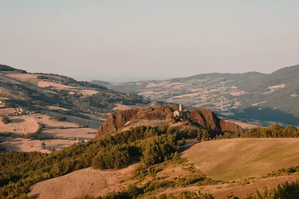

Home › Wine regions › Emilia-Romagna
Emilia-Romagna wine region

Photo: Lorenzo Bignami on Unsplash
Fizzy Lambrusco and everyday Sangiovese.
Vines grow in all 20 regions. Wines are classed DOCG, DOC and IGT.
CountryItaly
Notable producers in Emilia-Romagna
- Cleto Chiarli
- Lini 910
- Medici Ermete
- Fattoria Zerbina
- Villa Papiano
Official appellations
| Appellation | Status | Style | Grapes |
|---|---|---|---|
| Colli Bolognesi Pignoletto (2010) Pignoletto (Grechetto Gentile) from the Bologna hills, still or sparkling. | DOCG | White, Sparkling | Grechetto |
| Romagna Albana (1987) Italy's first white DOCG: dry, off-dry and passito Albana from the Romagna hills. | DOCG | White, Sweet | Albana |
| Bosco Eliceo Coastal sands near Ferrara: tart Fortana reds. | DOC | White, Red | Fortana |
| Colli Bolognesi Hills south-west of Bologna. | DOC | White, Red | Barbera, Cabernet Sauvignon, Pignoletto |
| Colli di Faenza Hills around Faenza. | DOC | White, Red | Sangiovese |
| Colli d'Imola Hills around Imola. | DOC | White, Red | Sangiovese, Trebbiano |
| Colli di Parma Frizzante Malvasia and reds from the Parma hills. | DOC | White, Red | Malvasia, Barbera |
| Colli di Rimini Hills behind Rimini; Rebola is the local Grechetto. | DOC | White, Red | Sangiovese, Rebola |
| Colli di Scandiano e di Canossa Reggio Emilia hills. | DOC | White, Red | Malvasia, Lambrusco |
| Colli Piacentini Piacenza hills: Gutturnio country. | DOC | White, Red | Barbera, Croatina, Malvasia |
| Colli Romagna Centrale Central Romagna hills. | DOC | White, Red | Sangiovese, Cabernet Sauvignon |
| Gutturnio (1967) Barbera-Croatina blend from the Piacenza hills, still or frizzante. | DOC | Red | Barbera, Croatina |
| Lambrusco di Sorbara The palest, most fragrant and acidic Lambrusco, from sandy soils north of Modena. | DOC | Red, Sparkling | Lambrusco |
| Lambrusco Grasparossa di Castelvetro The darkest, most tannic Lambrusco from the hills south of Modena. | DOC | Red, Sparkling | Lambrusco |
| Lambrusco Salamino di Santa Croce Fruity, balanced Lambrusco from Santa Croce near Carpi. | DOC | Red, Sparkling | Lambrusco |
| Modena Province-wide DOC for Lambrusco and other wines of Modena. | DOC | Red, Sparkling | Lambrusco |
| Ortrugo dei Colli Piacentini Light, often frizzante white from the local Ortrugo grape. | DOC | White | Ortrugo |
| Pignoletto Pignoletto from the wider Bologna and Romagna area. | DOC | White, Sparkling | Grechetto |
| Reggiano Lambrusco and other wines from Reggio Emilia. | DOC | Red, Sparkling | Lambrusco |
| Reno Plains DOC north of Bologna. | DOC | White, Red | Albana, Trebbiano |
| Romagna Romagna's main DOC: Romagna Sangiovese with 12 sub-zones, plus Trebbiano and Cagnina. | DOC | Red, White | Sangiovese, Trebbiano, Albana |
Emilia-Romagna wines to try
Cleto Chiarli Vecchia Modena Premium
Emilia-Romagna · Lambrusco di Sorbara · Lambrusco
Pale, dry and frothy: strawberry, raspberry and bright acidity.
Food: Mortadella, tortellini, pizza
More wine regions in Italy
TuscanyPiedmontVenetoSicilyAosta ValleyLombardyTrentino-Alto AdigeFriuli-Venezia GiuliaLiguriaUmbriaMarcheLazioAbruzzoMoliseCampaniaPugliaBasilicataCalabriaSardinia
See Emilia-Romagna on the wine map
The Wine Reference newsletter
New wines, stories and career guides, one email a week at most.
Over 18s only. Unsubscribe any time with one click. Your email is stored securely by Kit and never shared.
Support The Wine Reference
This guide is free, with no paywall. If it helped you choose a bottle, you can buy me a glass and keep it growing.
🍷 Buy me a glass